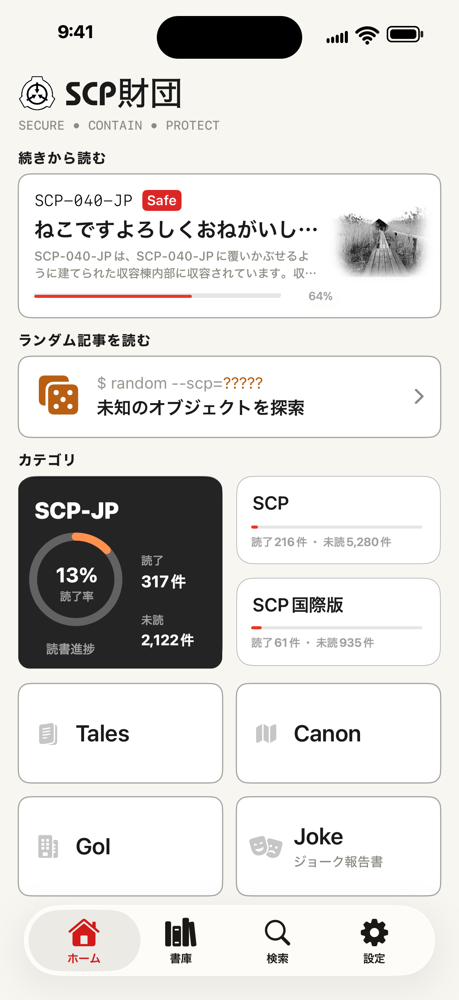

Overview
Secure · Contain · Read
SCP Docs は、SCP Wiki と各支部サイトの記事をより快適に読むための非公式ファンメイド iOS リーダーです。公開されている元ページを、書庫の閲覧、支部別検索、保存、読書記録、読みかけ復帰まで扱えるネイティブな読書ワークスペースにまとめます。
ネイティブ iOS リーダー
4支部対応
読書状態
プレミアム読書ツール
Available on the App Store
SCP Docs for iPhone
iOS 17以降に対応。アプリUIは現在、英語・日本語・フランス語・ロシア語に対応しています。
App Store で見る
View on Apple

Reading workspace
読む、探す、整理する、戻ってくる
アプリはホーム、書庫、検索、設定を中心に構成されています。現在のホームは「続きから読む」、検索プリセット、ランダム発見、Stories / Tales / Canons / Series / GoI / ガイド類などへ進む整理されたディレクトリを備えます。
閲覧履歴、読了状態、評価、ブックマーク、後で読む、スクロール位置、メモ、フォルダ、続きから読むデータを記事に結びつけて保存し、読んできた経路を端末内で見失いにくくします。
Content scope
4支部をひとつの読書フローに
英語本家 SCP Foundation アーカイブと、日本・フランス・ロシア支部に対応しています。支部を切り替えると、ホーム、検索、アプリ内リスト、記事リンク先、アプリUI言語が切り替わります。カタログデータがある範囲で SCP International や翻訳アーカイブの入口も整理します。
- 書庫リスト — SCP記事、Tales、Canons、Canonシリーズ、GoI、Joke SCP、SCP-EX、コレクション、新着記事、関連ディレクトリ。
- 検索 — 番号・タイトル検索は無料。プレミアムでは対象文書、タグ、オブジェクトクラス、メモ、読書状態、公式評価、長さ、保存検索まで組み合わせられます。
- リーダー — 文字組み、テーマ、スクロール操作、ダークモード、特殊レイアウト記事の再現性を見直した本文表示。
Premium
深く読むためのツール
- 読書統計
- 読書時間、カタログ読了率、よく読むオブジェクトクラスやタグ、評価傾向、メモ、積読、曜日・月・年ごとの記録を表示します。
- 保存した検索
- 検索条件を保存し、新しく一致する記事がカタログに現れたときに端末上の通知で知らせます。
- ブックマークフォルダ
- 保存した記事をフォルダで整理し、メモや保存検索とともに自分の iCloud Drive 経由で同期できます。
- 聴く、保存する
- 読み上げ機能で本文を音声再生し、対象記事のオフライン保存で通信がない場面でも読み返せます。
- カードで共有
- 記事や選んだリストを、X などで共有しやすいカード画像にできます。テンプレートとコメントにも対応します。
- 広告と上限
- プレミアムでは広告非表示、保存上限拡張、メモ編集、高度な検索を利用できます。利用可能な場合はリワード広告で一時的にプレミアムを解放できます。
Requirements
動作環境
- OS — iOS 17以降。
- 通信 — カタログ更新、オンライン記事表示、元サイトコンテンツ、広告、購入確認、外部リンクに必要です。
- アカウント — アプリで読むだけなら SCP Foundation や Wikidot のアカウントは不要です。
Legal